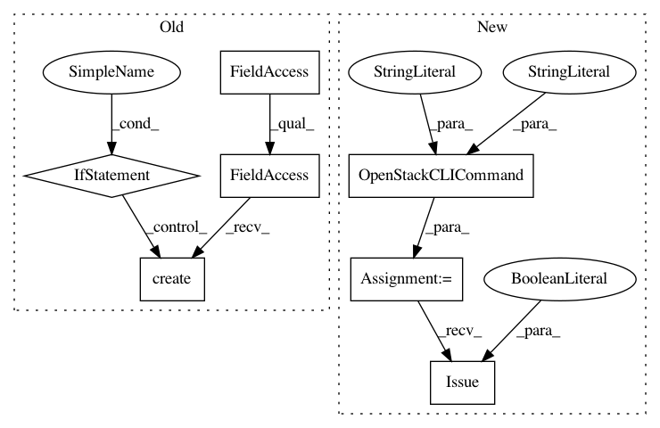

00f9f416594b404c02f87cec85d405cad341d4ad,perfkitbenchmarker/providers/openstack/os_network.py,OpenStackFirewall,__init__,#OpenStackFirewall#,37
Before Change
self.__nclient = utils.NovaClient()
with self._lock:
if not (self.__nclient.security_groups.findall(
name="perfkit_sc_group")):
self.sec_group = self.__nclient.security_groups.create(
"perfkit_sc_group",
"Firewall configuration for Perfkit Benchmarker"
)
else:
self.sec_group = self.__nclient.security_groups.findall(
name="perfkit_sc_group")[0]
def AllowICMP(self, vm, icmp_type=-1, icmp_code=-1):
Creates a Security Group Rule on the Firewall to allow/disallow
ICMP traffic.
After Change
self.sec_group_rules_set = set()
with self._lock:
cmd = utils.OpenStackCLICommand(self, "security group", "show",
"perfkit_sc_group")
stdout, stderr, _ = cmd.Issue(suppress_warning=True)
if stderr:
cmd = utils.OpenStackCLICommand(self, "security group", "create",
"perfkit_sc_group")
cmd.Issue()
In pattern: SUPERPATTERN
Frequency: 3
Non-data size: 7
Instances
Project Name: GoogleCloudPlatform/PerfKitBenchmarker
Commit Name: 00f9f416594b404c02f87cec85d405cad341d4ad
Time: 2016-06-29
Author: carlos.torres@rackspace.com
File Name: perfkitbenchmarker/providers/openstack/os_network.py
Class Name: OpenStackFirewall
Method Name: __init__
Project Name: GoogleCloudPlatform/PerfKitBenchmarker
Commit Name: 00f9f416594b404c02f87cec85d405cad341d4ad
Time: 2016-06-29
Author: carlos.torres@rackspace.com
File Name: perfkitbenchmarker/providers/openstack/os_network.py
Class Name: OpenStackFirewall
Method Name: AllowICMP
Project Name: GoogleCloudPlatform/PerfKitBenchmarker
Commit Name: 00f9f416594b404c02f87cec85d405cad341d4ad
Time: 2016-06-29
Author: carlos.torres@rackspace.com
File Name: perfkitbenchmarker/providers/openstack/os_network.py
Class Name: OpenStackFirewall
Method Name: AllowPort